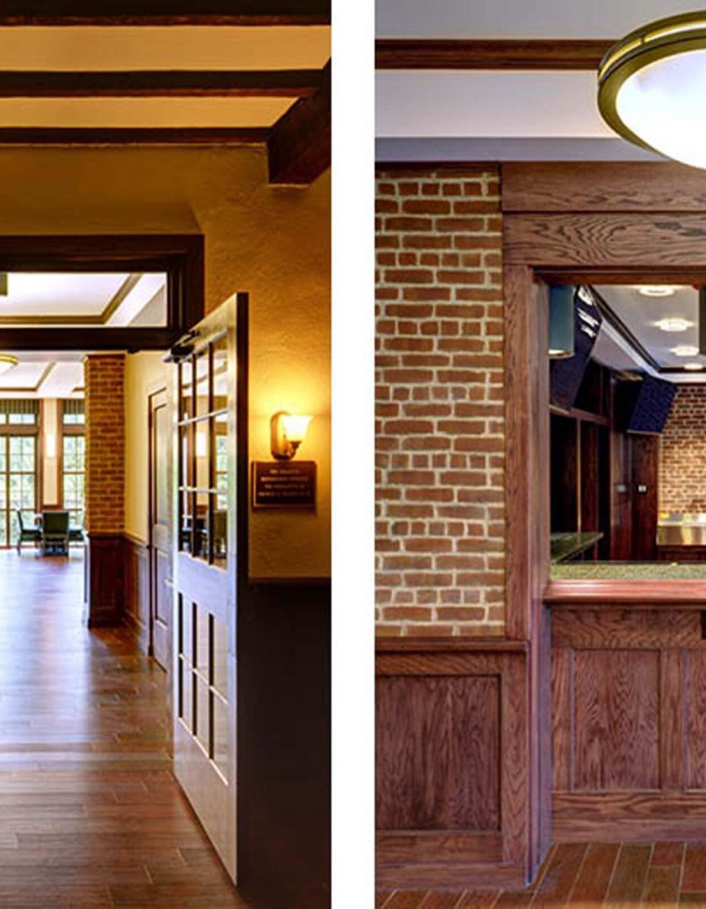
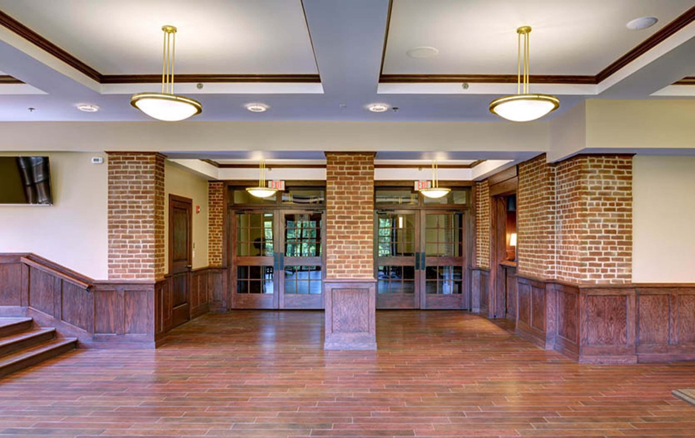
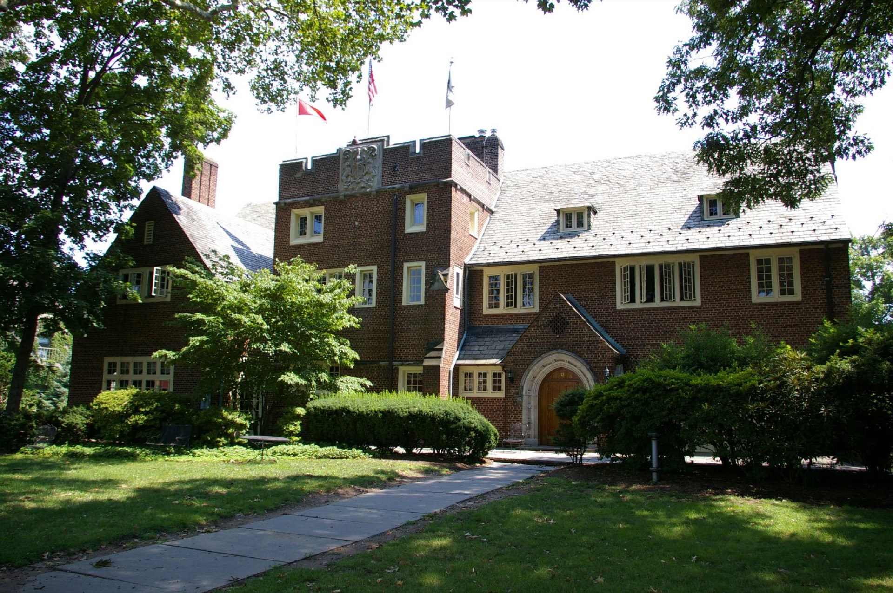
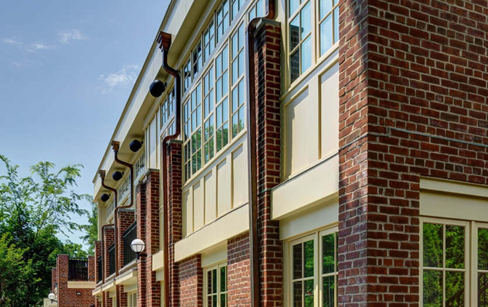
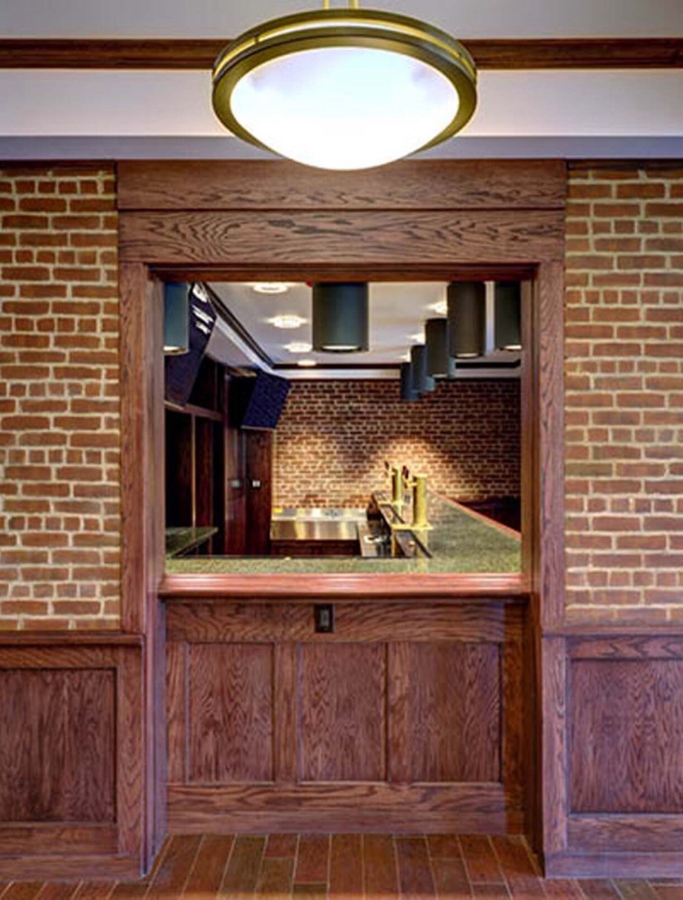

Finding us
Tower sits on Prospect Avenue between Campus Club and Cannon Club, a short walk from Washington Road.
Open in Maps ↗
03The House
It was designed by one of our own in 1917 and has been added to ever since. Here’s a tour of the rooms where Tower happens.
13 Prospect Avenue
Princeton, NJ 08540

01The Clubhouse
Roderic Barnes, Class of 1903, designed the clubhouse in the Collegiate Gothic brick of the campus around it. Above the arched oak door rises the tower that gives the club its name, carved with the Tower seal.
Over the decades the house has grown with us: a sunroom for long afternoons, a billiards room, new kitchens, and most recently a bright dining addition opening onto the back lawn.
02Room by Room
Hover over a room to look inside.
01The Dining Room 02The Great Room
02The Great Room
03The Library
04The Game Room 05The Terrace
05The Terrace 06The Lawn
06The Lawn
07The Tower
03A New Chapter
The newest part of the house is a dining room wrapped in tall windows looking into the trees, with a terrace above and wide stairs down to the lawn.
Designed with Clarke Caton Hintz, it uses the same red brick as Barnes’s original, so the old house and the new addition read as one.




Tower sits on Prospect Avenue between Campus Club and Cannon Club, a short walk from Washington Road.
Open in Maps ↗Questions about the house, deliveries or events? Our General Manager, Jim Hayes, runs the club day to day.
(609) 924-0473 →The best way to know the house is to have a meal in it. Prospective members are welcome at open meals during the year.
Visit an open mealInterior and addition photography: Clarke Caton Hintz.